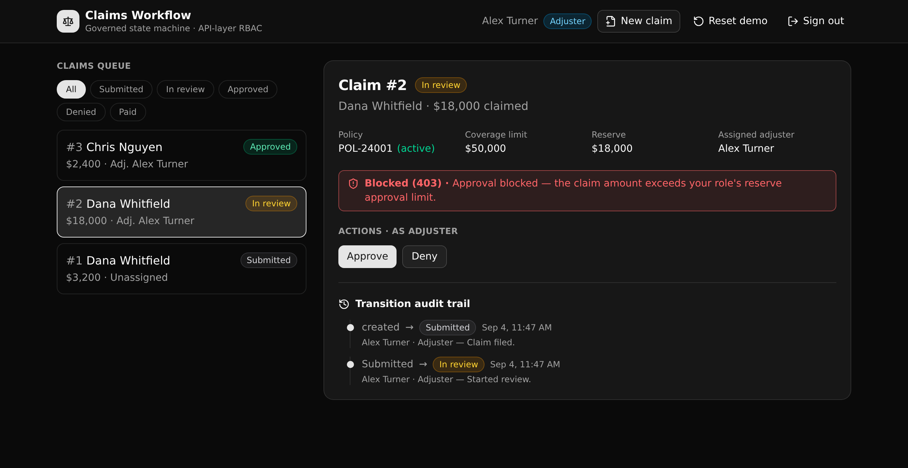

A governed insurance claims backend. Each claim moves through an enforced state machine, illegal transitions and over-limit approvals are blocked at the API layer, and every move is written to a readable audit trail.

It stands in for the legacy claims stack a carrier runs today, in one governed backend a platform director can read. Four things a technical evaluator cares about:
Policies, claims, an immutable audit log, per-role reserve limits, and an auth table, wired with foreign keys.
A token carries the caller role, and each endpoint checks it with a precondition. Permissions live in the API layer, never in a row-level policy.
One endpoint is the engine. It checks the legal edge, then the role, then the reserve limit, and the first failure returns a 403 that names the rule.
Every move and every assignment appends one row. The claim detail renders the ordered trail with who did what and when.
Three guards run in order on every transition, and the first to fail wins.
submitted ─▶ in_review ─▶ approved ─▶ paid
│ │
└────────────┴─▶ denied
1. legal edge the target is an allowed next state (submitted ▷ paid is refused)
2. role a manager may do any legal move; an adjuster cannot mark paid; a viewer is read-only
3. reserve limit an approval must sit at or under the caller role's approval cap
Nine endpoints across three groups. The canonical slugs are namespaced (cwsm) to stay unique on a shared instance.
| Method | Path | What it enforces |
|---|---|---|
| POST | /api:cwsm_auth/login | Verifies credentials, mints a Bearer token carrying the role. |
| POST | /api:cwsm_claims/file | Policy must be active, amount within coverage. Writes the first audit row. |
| POST | /api:cwsm_claims/transition | Legal edge, then role, then reserve limit. Appends an audit row on pass. |
| POST | /api:cwsm_claims/assign | Claims manager only. The assignee must have the adjuster role. |
| GET | /api:cwsm_claims/get/{claim_id} | One claim joined to its policy, adjuster, and full audit trail. |
| GET | /api:cwsm_claims/list | The queue view, optionally filtered by state. |
| GET | /api:cwsm_claims/policies | Every policy, for the file-a-claim form. |
| GET | /api:cwsm_claims/adjusters | The assignable adjuster directory. |
| POST | /api:cwsm_seed/reset | Public. Truncates and reseeds the demo fixture. |
Point your coding agent at the repo and adapt it to your domain. Keep the API-layer RBAC, the enforced state machine, and the audit trail.
I want to build on the "Claims Workflow State Machine" XanoTS template. Clone it and use it as the starting point: https://github.com/xano-scratch/claims-workflow-state-machine Read the README and the xano/ backend, then help me adapt the tables, endpoints, and state machine to my domain: <describe it here>. Keep the API-layer RBAC, the enforced state machine, and the audit trail. Deploy it with `npm run xano:deploy`.
Live preview links are ephemeral and expire, so this page does not host one. The repo is the durable
artifact: clone it and run npm run xano:deploy for a fresh live URL of your own.